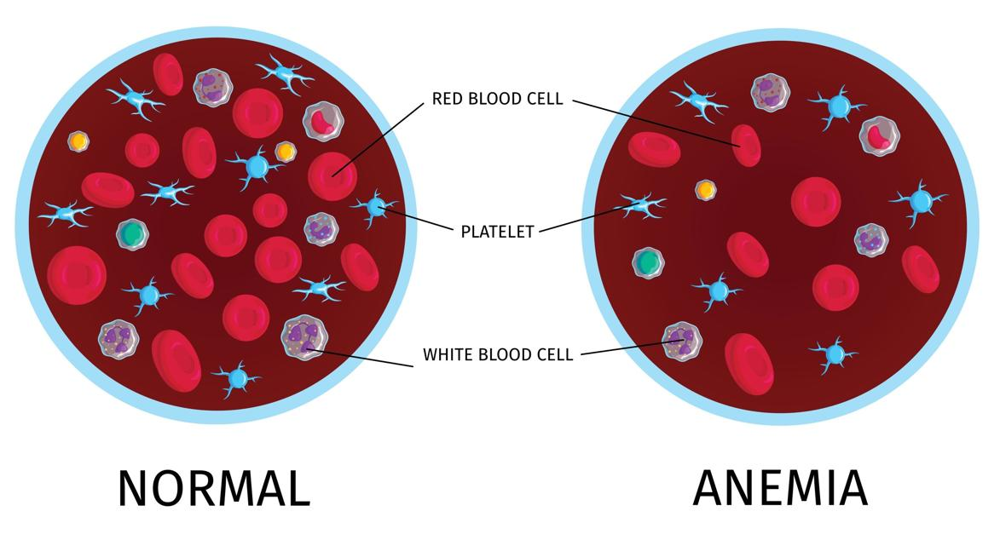
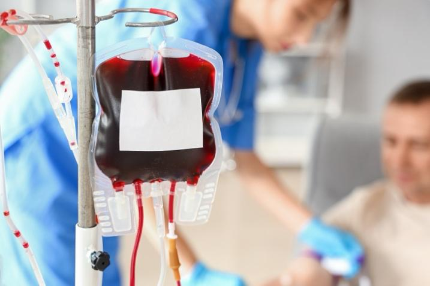

When you do not have enough red blood cells, it is called anemia. Red blood cells carry oxygen through your body. If you do not have enough of them, you may feel tired, weak, or short of breath.
Some chemotherapy treatments lower the number of these cells. It is common for people getting chemotherapy to get anemia.
In many cases, the anemia itself does not need treatment. The symptoms it causes can be reduced or eliminated with treatment or lifestyle changes.
Going through chemotherapy is hard, physically and emotionally. Your care team is here to support you in any way we can. Let us know if you have questions. We want to help you feel your best.

Chemotherapy targets cancer cells, but it can also affect healthy cells, including those that make red blood cells. When chemotherapy lowers the number of red blood cells, it causes anemia. People who have more advanced cancer or who have had many rounds of treatment are more likely to get anemia.
Other causes of anemia include:
Not getting enough of the minerals and vitamins your body needs to make red blood cells
Bleeding
Other, less common disorders that affect red blood cells
Symptoms of anemia include:
Feeling very tired or weak
Shortness of breath when you move or exercise
Feeling dizzy or lightheaded
Pale skin or pale gums
Cold hands or feet
Headaches or trouble concentrating
During chemotherapy, anemia is usually found during routine blood tests. If you have symptoms, your care team may order blood tests specifically to check for anemia. These tests are called hemoglobin, hematocrit, and red blood cell count.
Treatment options depend on how bad your anemia is. They include:
Blood transfusions: Your care team might give you blood donated to the blood bank by others.
Eating healthy: Your body needs iron, vitamin B12, and folate to make new red blood cells. Usually, you get these nutrients from food. If your levels are low, your care team may suggest supplements.
Medicines: Medicines called erythropoiesis-stimulating agents, or ESAs, can help your body make more red blood cells.
Oxygen therapy: You can be given extra oxygen if you are very short of breath.

To help keep your blood healthy during chemotherapy:
Follow your care team’s advice about what to eat.
Rest when you feel tired.
Avoid strenuous activity if you feel weak or dizzy.
Keep all your appointments for blood tests.
Report any new or worsening symptoms to your care team.
Call your care team if:
You feel very tired or weak.
You feel dizzy or faint.
Your skin or gums look very pale.
You have new headaches or trouble concentrating.
Get help right away if:
You suddenly feel very short of breath or cannot catch your breath.
You faint or lose consciousness.
You have chest pain or a rapid, irregular heartbeat.
You feel very weak and cannot stand or walk.
Thank you for trusting us with your care. We are here to support you and want you to feel your best. Contact us with any questions.
IF YOU HAVE A MEDICAL EMERGENCY, CALL 911 OR GO TO THE EMERGENCY ROOM.
The information presented is intended for general information and educational purposes. It is not intended to replace the advice of your health care provider. Contact your health care provider if you believe you have a health problem.
Last updated May 2025
© 2025 Mytonomy, Inc. All rights reserved.